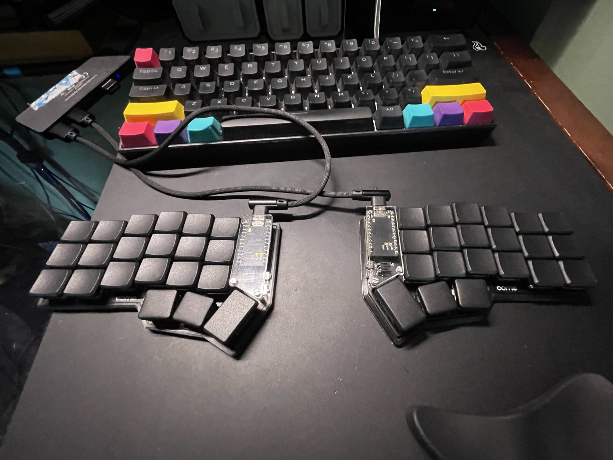
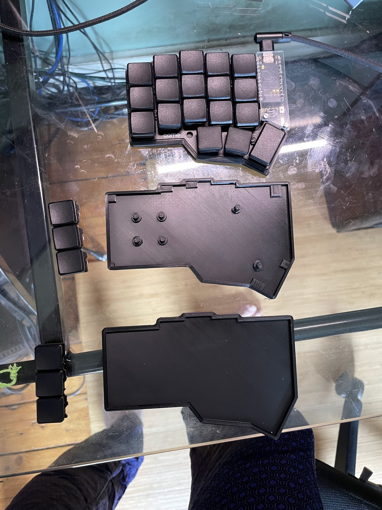
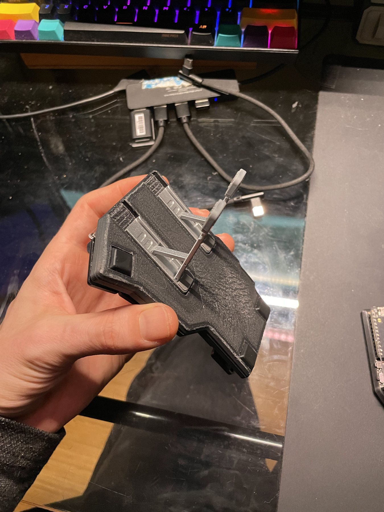
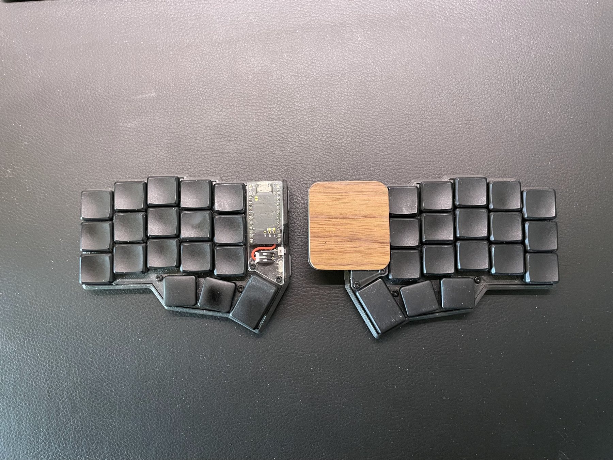
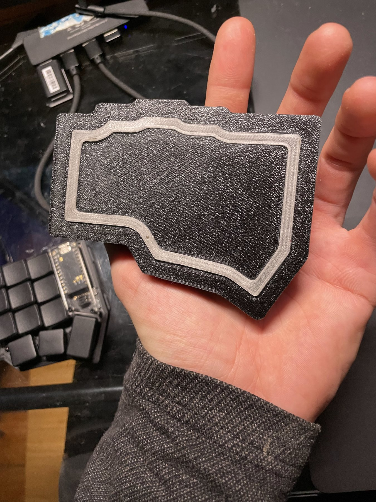
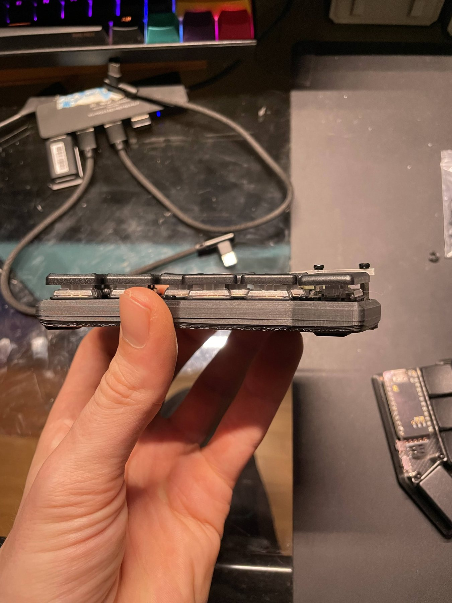
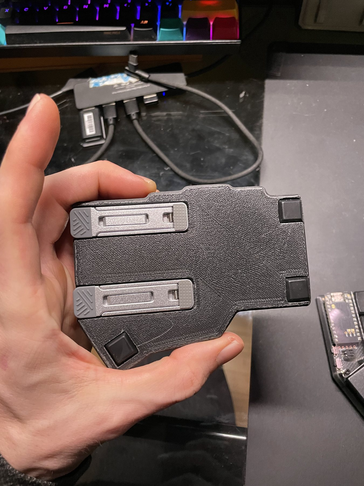
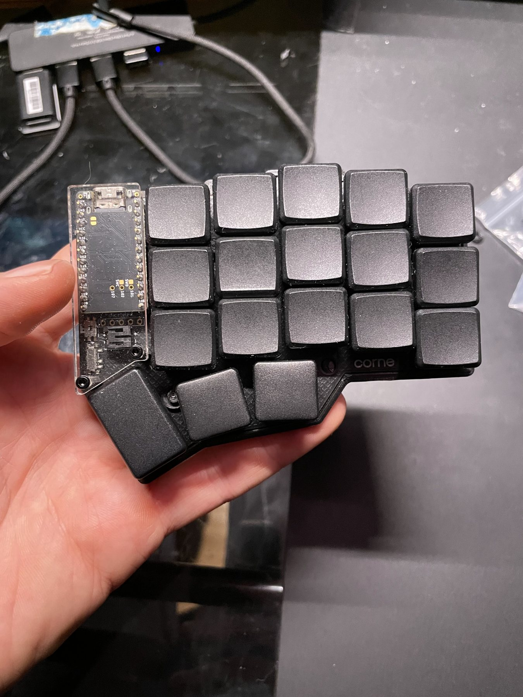

Home/03 : Hardware/NullKeys
Split keyboard : Input design
36 keys / Kailh Choc / ZMK over BLE / TPS43 trackpad
Scroll to assemble
Layout : ZMK firmware
Combos on this layer
The 3D model needs WebGL, which this browser has turned off.
A 36 key split keyboard with a trackpad in the right half. Every letter and hotkey is in reach of one hand, so the other can stay on the mouse. I built the first version over six months of spare time in fall 2023 and have been refining it since.
01 : Problem
I love the puzzle of control interfaces, and the standard keyboard layout is stuck in time. I wanted to see how good a layout I could make in the smallest footprint possible.
The biggest slowdown on a computer is the trip between mouse and keyboard. Most ergonomic keyboards solve it by keeping you on the keyboard. That works for coding, but not for CAD, video editing or anything that jumps between programs.
In that kind of work you rarely type a whole word, just the first few letters of a command or a hotkey. So my goal was to keep one hand on the mouse and put the whole keyboard under the other.
That set the requirements: every key reachable without moving the hand, common tasks on the home row, and every letter and hotkey typeable with one hand, including Shift and Ctrl+Shift combinations.
02 : Constraints
01
Five columns and three thumb keys per half, with the outer columns broken off the Corne PCB. Everything else has to live on layers.
02
The legs fold flat into the base, swing out to set the angle, and have to stop the half rocking while I type.
03
The TPS43 had to fit in the right half without taking a key, and sleep with the keyboard so it doesn't drain a small battery.
03 : Prior Art
04 : Process

September 2023
My first case was a test print that held every key of the full Corne. It needed supports for the component leads under the PCB, plus standoffs and retaining C rings to hold it together. A few days of use convinced me I could go smaller.

Four days later
I broke the outer columns off the PCB (the three keys on the left of the photo) and modelled the next case in Fusion 360 around what was left.

October 2023
Two legs sit flush in the underside and swing out to tent each half. Folded away, the case is thin enough to hold in one hand.
The first underside had a printed TPU foot across the whole base. It didn't grip, so rubber feet at the corners replaced it.

Today
The TPS43 sits in the inner top corner of the right half, under a walnut veneer. It took about three mounts to get right and is still a work in progress.
Since then I've been working on tracking performance and battery drain.
Firmware
Each half runs a nice!nano v2. The TPS43 is soldered to the right one's pads and talks over I2C. A fork of the Azoteq driver lets the trackpad sleep with the keyboard, and a small input processor I wrote adds laptop style tap and drag.
Layout
With 36 keys, every symbol, number and modifier lives on a layer.
The letters start from Colemak, with a few moved. Before moving one I checked why Colemak put it there, so I wouldn't undo something it was doing well. The moves put key hotkeys back where QWERTY has them: Z, X, C and V for undo, cut, copy and paste, and S for save.
Common edits are home row combos. S and R together is Backspace, R and T is Delete, and S and T is Tab, so fixing a typo never means reaching. The S and R backspace is one of my favorite optimizations in the whole layout.
Holding R or T mirrors the right half onto the left, so the left hand can type any letter while the right is on the mouse. The thumbs carry Shift, Ctrl, Alt and Win.
Gaming needed its own layers, since a typing home row puts WASD in the wrong place. Pressing A, S and T together switches to QWERTY shifted one column in, with Shift and Ctrl under the pinky. Holding Q on that layer brings up the numbers.
05 : Software
Fourteen layers and two dozen combos are a lot to hold in your head. So I built the NullKeys overlay, a Godot app that sits on top of everything and shows which keys are pressed, which layers are active and what every key does right now. Hovering a key shows what it does on every layer and which combos use it.
A computer only receives keycodes, so it never sees layers, holds or combos. Holding A for the Num / Sym layer sends nothing at all. Instead, a small ZMK module streams the key positions and layer state straight from the firmware.
Keyboard
Listens for key position and layer events and sends 32 byte reports over Raw HID. It only streams while the overlay is asking for data, so the radio stays quiet otherwise.
Bridge
Godot cannot open HID devices, so a small Python process reads the reports and forwards them as JSON over local UDP. The overlay starts and stops it automatically.
Overlay
Parses corne.keymap directly, so it always matches the firmware, then resolves layers, hold taps and combos and draws the result. Overlay mode draws the keys as outlines for screen recordings.
06 : Decisions
A trackball is more precise and a pointing stick takes almost no space. I went with a capacitive pad for gestures, scrolling and zoom.
Capacitive sensing costs power, needs tuning, and is worse than a ball for fine selection work.
Fitting every modifier and the F keys onto 36 keys took more fiddling than anything else. The first thumb key is a tap dance: hold for Alt, tap twice for a sticky Win key. Alt had to stay holdable for things like Alt+Tab.
The other two thumbs carry Shift under Space and Ctrl under Enter. Tuning those so fast typing never fires a modifier, and a held modifier never types a space, took a lot of work. The F keys are on their own layer, reached by holding A and the Ctrl/Enter thumb.
Three magnets in the case snap the halves together and attach them to accessories, like a pocket mount that lets the halves hang off my pants for portable use. They also stick to any metal surface for storage.
A custom PCB would have let me place every key for my own hand. Starting from the Corne meant the PCB, switch plate and firmware support were already solved, so I could spend my time on the case, trackpad and layout.
The column stagger is built for an average hand, not mine.
Printing at home meant I could test a part in the evening and print the next version that night. That made five case versions practical.
Layer lines, weaker screw bosses and a prototype finish. Now that the design is refined, a resin print is one of my next steps.
07 : Failures
The TPU foot. I expected a printed TPU foot to grip the desk. It slid, so rubber feet replaced it.
A removable trackpad. I wanted the trackpad to unplug from the case, but after a few failed attempts at stripping a six pin ribbon cable I soldered it straight to the pads.
Battery drain on the right half. The original driver never let the pad sleep, so the right half emptied first. A driver fork that sleeps with the keyboard fixed the worst of it.

08 : Outcome
NullKeys is my daily driver, and going back to a normal keyboard makes me miss it immediately.
It still has rough edges. Win needs a tap dance, so a combo like Win+Shift+S takes some hand contortion. Most games need a few controls remapped. The exposed Choc switches are a little fragile, so it needs a case in a backpack.
The trackpad's battery drain has me considering an AZ1UBALL trackball module instead. That decision and a resin printed case are next.
1 month
To get back to full typing speed. Now I'm much faster than I ever was on a normal keyboard
5
Case versions printed so far
2 to 4 weeks
Per charge for the left half on a 110 mAh cell. The trackpad half drains faster
09 : Object



10 : Build